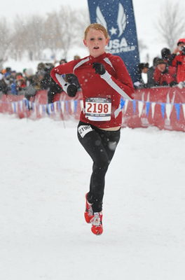
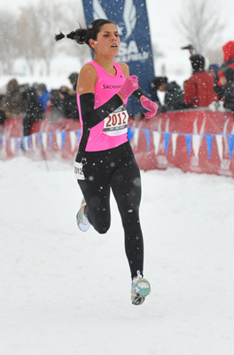
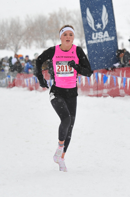
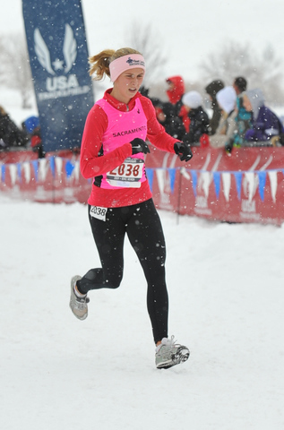
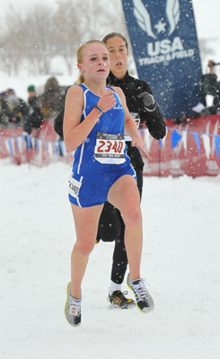
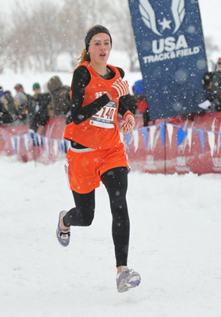
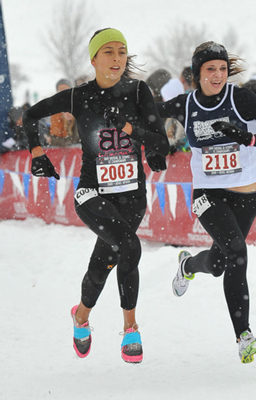
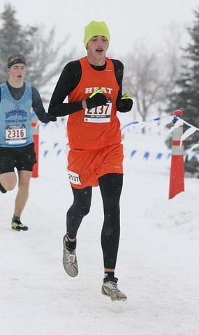
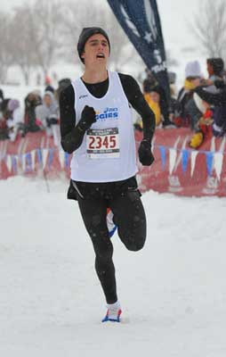
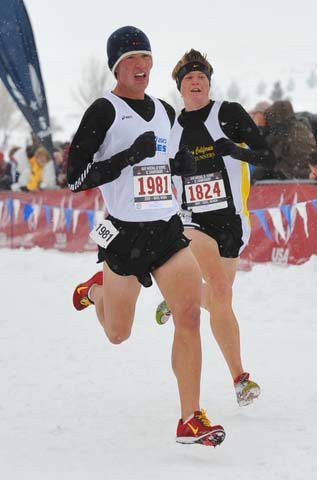

2009 National Junior Olympic Cross Country Championship
Pacific Association Top Age Division Finishers
INTERMEDIATE DIVISION



Intermediate Girls (L to R): 4th place - Jessie Petersen (RF United) 19:17; 8th place - Emma Freeman (Buffalo Chips B) 19:28; 9th place - Shelby McIntyre (Buffalo Chips B) 19:30



Intermediate Girls continued (L to R): 11th place - Brooke Holt (Buffalo Chips) 19:39; 18th place - Savannah Camacho (San Luis Distance Club) 19:51; 19th place - Natalie Dimits (Pleasanton Heat) 19:53
Team Score: Buffalo Chips B (2nd place); Buffalo Chips D (4th place); Pacific United (5th place)




Intermediate Boys (L to R): 15th place - Parker Duel (Pleasanton Heat) 16:47;20th place - Mathew Ruppenthal (Asics Aggie B) 16:52; (no photo available) 23rd place - Nathanael Williams (Unattached) 16:57; 25th place - Christopher Bolt (#1981, Asics Aggie) 17:03